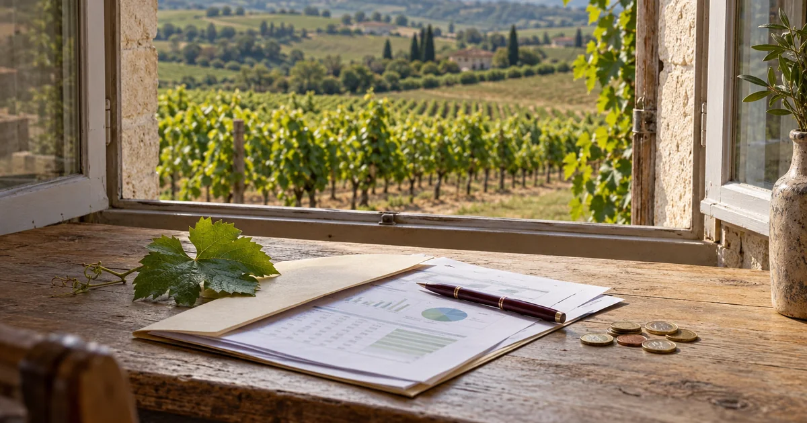

Remonter à la source
Les fiches renvoient aux administrations, collectivités et organismes gestionnaires. Le règlement de l’appel et les réponses de l’instructeur permettent de confirmer les conditions applicables à votre projet.
Financer la vie du domaine
S’installer, équiper le chai, renouveler du matériel ou faire évoluer ses pratiques : chaque projet pose la question de son financement. Mon Chai vous aide à explorer les subventions pour les viticulteurs, à comprendre les dispositifs et à préparer les bonnes questions.
Consultation libre, sans compte. Des pistes sourcées à vérifier auprès du financeur.

Notre démarche
Les soutiens à la viticulture sont répartis entre plusieurs organismes, programmes et territoires. Notre travail consiste à donner des repères pour explorer ces possibilités à partir du quotidien d’un domaine.
Le dossier réunit des subventions, des dotations, des prêts, des exonérations et des accompagnements. Chaque fiche situe le projet concerné, le territoire, le calendrier connu et l’organisme à consulter. Vous pouvez ainsi identifier une piste, lire ses conditions et retrouver la source officielle.
Les fiches renvoient aux administrations, collectivités et organismes gestionnaires. Le règlement de l’appel et les réponses de l’instructeur permettent de confirmer les conditions applicables à votre projet.
Un dépôt ouvert, un appel clos et un paiement réservé aux dossiers acceptés correspondent à des situations différentes. Le moteur les distingue et chaque fiche conserve sa date de vérification.
Les dispositifs nationaux, européens et régionaux ont des périmètres propres. Le panorama comprend des exemples territoriaux et des portails régionaux pour poursuivre la recherche locale.
Le moteur de subventions Mon Chai
Le catalogue rassemble les fiches. Cette page vous explique comment l’utiliser pour préparer votre recherche de financement viticole.
Choisissez l’étape du domaine : installation, investissement, exploitation, transition, difficulté ou transmission. Un mot-clé comme « chai », « matériel » ou « bio » peut préciser la recherche.
Sélectionnez la région du domaine. Les résultats incluent les dispositifs nationaux compatibles. Pour l’outre-mer, les fiches évitent de transposer automatiquement les dispositifs métropolitains.
Affinez par type de soutien et situation du guichet. Ouvrez une fiche, relevez sa date de contrôle et consultez la source officielle avant d’engager votre démarche.
Le moteur propose des pistes de financement. Il ne calcule pas de droit individuel. La confirmation de l’éligibilité et de l’ouverture du guichet appartient à l’organisme compétent.
Rechercher un financement viticoleÀ chaque étape du domaine
Les subventions agricoles et les autres formes de soutien répondent à des projets précis. Ces portes d’entrée ouvrent les rubriques du catalogue pour explorer les dispositifs et leurs conditions.
Dotations, accompagnement, premières années et repères pour les jeunes agriculteurs.
Explorer l’installation InvestirVignoble, matériel viticole, bâtiments, équipements et investissements collectifs.
Explorer les investissements Faire évoluerConversion bio, environnement, énergie et projets collectifs, selon les dispositifs.
Explorer la transition DévelopperFormation, emploi, commercialisation et autres soutiens à la vie de l’exploitation.
Explorer l’exploitation Faire faceRepères sur les risques, l’indemnisation, la trésorerie et l’accompagnement.
Explorer ces soutiens Préparer la suiteConseil, engagements et dispositifs à examiner avant un changement du domaine.
Explorer la transmissionPour un dispositif précis : investissements au chai, restructuration du vignoble, PCAE et matériel ou conversion bio. Les dates et situations figurent sur les fiches.
Au-delà de la recherche
Un projet s’appuie aussi sur la connaissance du domaine : ses parcelles, ses opérations, ses stocks et ses ventes. Mon Chai est un logiciel de gestion viticole conçu pour réunir ces informations.
Notre positionnement reste simple : un outil accessible, un prix lisible et des évolutions nourries par les retours des vignerons. Le moteur public facilite la recherche de dispositifs ; le logiciel accompagne la gestion quotidienne qui entoure vos projets.
Pour préparer un dossier, rapprochez vos données de la liste de pièces demandées par le financeur et faites examiner votre plan de financement avec vos interlocuteurs habituels. Le dépôt et l’instruction se font auprès des organismes concernés.
Suivre les parcelles, les interventions et les vendanges pour retrouver le contexte de production.
Découvrir le suivi de la vigne ↗Stocks & traçabilitéRelier vins, produits finis, lots et inventaires dans le suivi des stocks du domaine.
Découvrir les stocks ↗Ventes & facturationRetrouver les clients et les documents de vente pour garder une vision de l’activité commerciale.
Découvrir les ventes ↗Avant de commencer
Le dossier donne un point de départ documenté. La fiche et le règlement du dispositif permettent ensuite de préciser la démarche avec le financeur.
Commencez par le projet et le territoire. Le moteur Mon Chai propose des fiches par étape du domaine ; les portails régionaux complètent la recherche locale. Chaque fiche renvoie vers ses sources officielles.
La consultation du catalogue public et de ses filtres est libre, sans compte Mon Chai. Le logiciel de gestion est une offre distincte, présentée sur la page des tarifs.
Le catalogue distingue les subventions et dotations, les prêts et garanties, la fiscalité, les droits sociaux, l’accompagnement et l’indemnisation. Choisissez « Subvention / dotation » pour limiter la recherche à cette nature de soutien.
La situation du guichet et la date de vérification figurent sur chaque fiche. Certains dispositifs sont clos ou limités au paiement de dossiers acceptés. Confirmez toujours la situation actuelle auprès de l’organisme gestionnaire.
Le moteur vous oriente vers les dispositifs et leurs sources. La demande se prépare et se dépose selon les modalités de l’organisme compétent. Mon Chai ne dépose pas de dossier à votre place et ne garantit pas l’attribution d’une subvention.
Décrivez votre projet, le territoire, la personne ou structure concernée, les dépenses envisagées et le calendrier. Demandez la liste des pièces, les règles de cumul et les conditions de début des dépenses. Le mode d’emploi du catalogue aide à organiser ces vérifications.
À vous de choisir la première piste
Retrouvez les fiches, leurs conditions et leurs sources dans le moteur de subventions viticoles Mon Chai.
Accéder au moteur de subventionsPrésentation publiée le par Mon Chai. Dernière veille du catalogue : . Chaque fiche conserve sa date de contrôle. Le panorama n’est pas un inventaire exhaustif des aides locales ni une décision d’éligibilité.